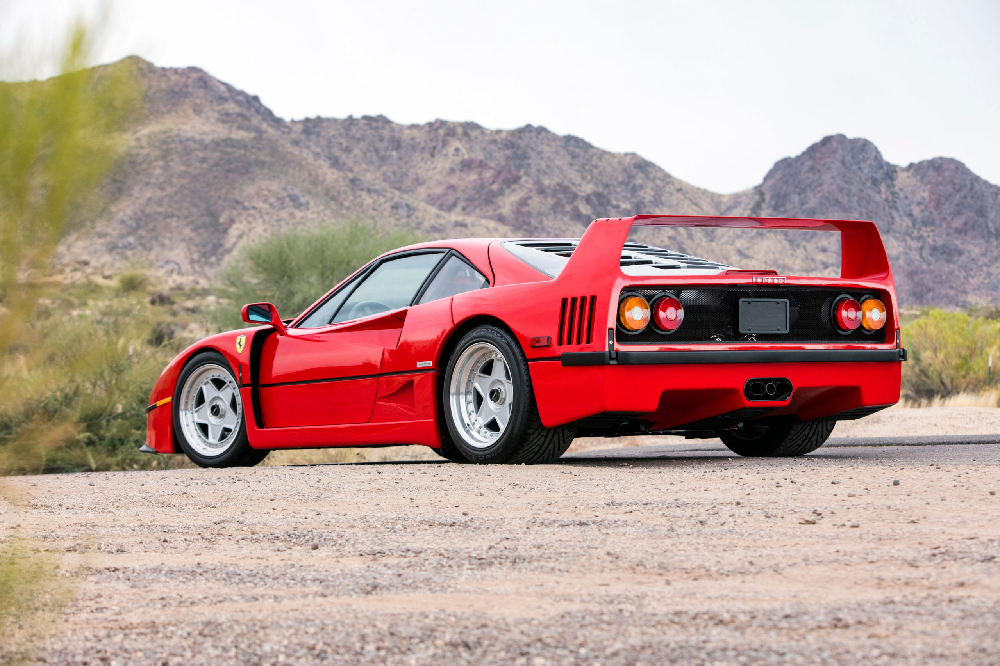
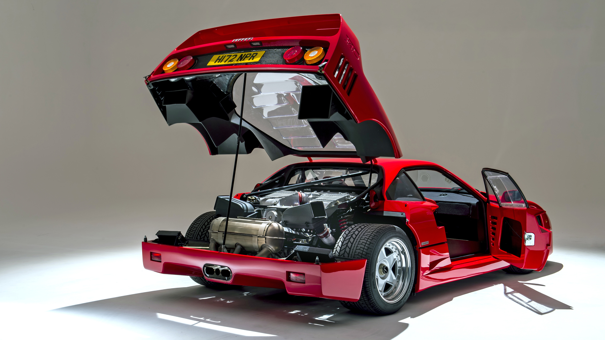
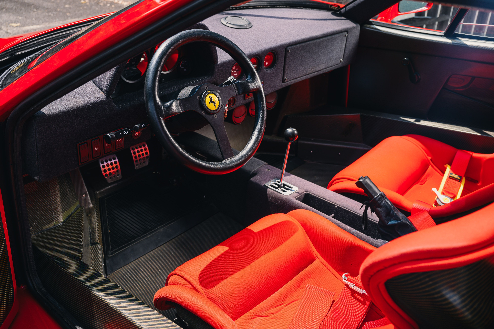
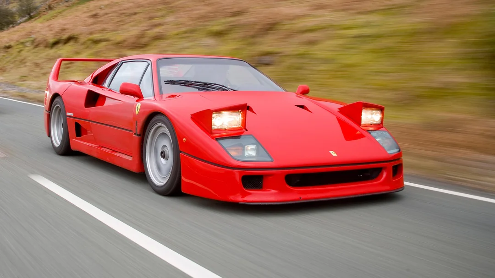

The Ferrari F40
The Ferrari F40 was unveiled in 1987 to commemorate the brand's 40th anniversary. Conceived as a limited-production model, it was the last car personally approved by Enzo Ferrari before his death in 1988. Originally intended as a run of just 400 units, the overwhelming demand led Ferrari to produce over 1,300 cars. Today, it remains a symbol of passion, engineering excellence, and the raw spirit of Ferrari's golden era.
Radical and Purposeful Design

Designed by Pininfarina, the F40 features a dramatic and functional body made from lightweight materials like carbon fiber, Kevlar, and aluminum. Its wide stance, aggressive air intakes, and massive rear wing are not just for show — every element is crafted to enhance aerodynamic performance and high-speed stability. The F40's shape was as revolutionary as it was iconic, setting new standards for supercar design.
Engine and Performance

At the heart of the F40 lies a twin-turbocharged 2.9-liter V8 engine that produces 478 horsepower. With a curb weight of just over 1,100 kg (2,425 lbs), the car rockets from 0 to 100 km/h (0–62 mph) in just 4.1 seconds and reaches a top speed of 324 km/h (201 mph). These figures made the F40 the fastest road-legal car of its time, and even today, its performance remains exhilarating.
A Pure Driving Experience

The F40 was built with a singular goal: performance. It lacks modern driving aids such as ABS, traction control, or power steering. The interior is stripped down, with bare carbon panels, bucket seats, and minimal insulation. This no-compromise approach delivers a visceral, analog driving experience that demands skill and rewards precision — a true connection between driver and machine.
Enduring Legacy

Decades after its debut, the Ferrari F40 continues to captivate automotive enthusiasts and collectors worldwide. Its reputation as one of the most raw, engaging, and beautiful supercars ever made is unmatched. Beyond its specs, the F40 represents a philosophy that blends racing heritage with uncompromising engineering — a legacy that still defines Ferrari's soul.